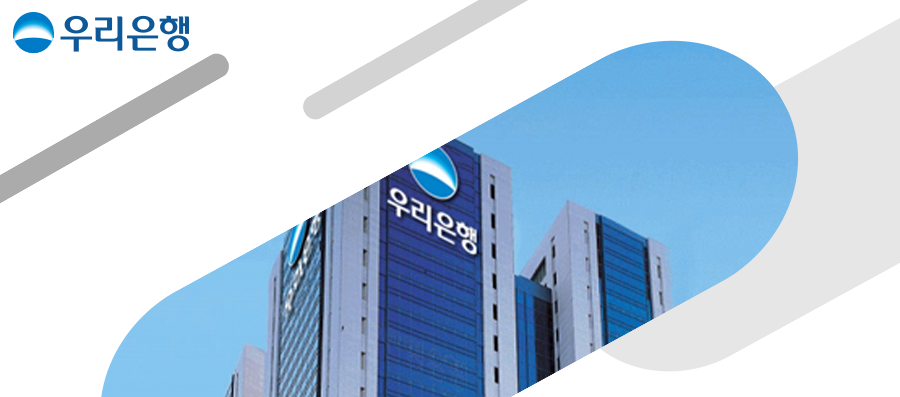

2023년 상반기 신입행원
(디지털/IT 부문) 채용
| 모집부문 | 상세내용 |
|---|---|
학력/연령/성별 | 제한없음 |
자격요건 | - 병역필(군복무 중인 자는 2023.6.30 이전 병역필 가능한 자) 또는 면제자 - 기타 해외여행에 결격사유가 없는 자 - 외국인의 경우 한국 내 취업에 결격사유가 없는 자 - 당행 인사관리지침 상 채용에 결격사유가 없는 자 |
※ 2023년도 상반기 신입행원 채용 모집 부문별 중복지원 불가
| 모집부문 | 상세내용 |
|---|---|
디지털/IT | 주요내용 - 디지털 및 IT/정보보호 전략 수립 및 추진 - 데이터를 활용한 분석 및 모델 개발, 데이터분석 플랫폼 기획 및 운영 - 디지털금융을 활용한 타 업종과의 제휴 모델 기획 및 추진 - 비대면 채널 서비스 기획 및 운영, 비대면 상품 및 서비스 마케팅 추진 - 비대면 고객경험 개선을 위한 UX전략 수립 및 UI디자인 설계 - 인공지능(AI)을 활용한 모델 개발, AI서비스 구축 및 운영 - 블록체인을 활용한 금융 비즈니스 모델 기획 및 발굴 - 은행 IT서비스 개발 및 운영 등 인원 40명 |
※ 최종합격자는 신입행원 연수 종료 후 영업점 배치
- 약 1년간 영업점 근무 후 디지털/IT 및 유관 본부부서 배치 (24년 하반기 정기인사 이동시)
※ 단, 신입행원 연수 및 근무기간 중 평가미달자의 경우 상기 내용이 달라질 수 있으며, 은행의 인력 운영 및 업무상 필요에 따라
변동될 수 있습니다.